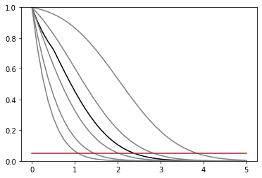
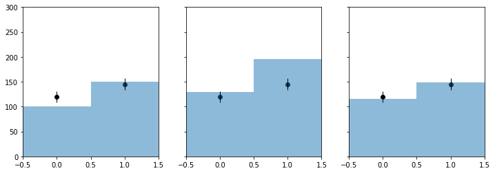
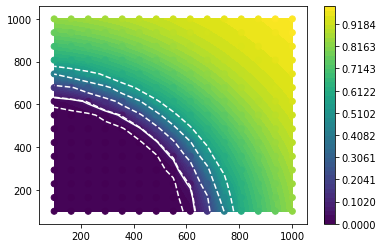

Multi-bin Poisson¶
[1]:
%pylab inline
Populating the interactive namespace from numpy and matplotlib
[2]:
import logging
import json
import pyhf
from pyhf import Model, optimizer
from pyhf.simplemodels import hepdata_like
from scipy.interpolate import griddata
import scrapbook as sb
[3]:
def plot_results(testmus, cls_obs, cls_exp, poi_tests, test_size=0.05):
plt.plot(poi_tests, cls_obs, c="k")
for idx, color in zip(range(5), 5 * ["grey"]):
plt.plot(poi_tests, cls_exp[idx], c=color)
plt.plot(testmus, [test_size] * len(testmus), c="r")
plt.ylim(0, 1)
def invert_interval(test_mus, cls_obs, cls_exp, test_size=0.05):
crossing_test_stats = {'exp': [], 'obs': None}
for cls_exp_sigma in cls_exp:
crossing_test_stats['exp'].append(
np.interp(
test_size, list(reversed(cls_exp_sigma)), list(reversed(test_mus))
)
)
crossing_test_stats['obs'] = np.interp(
test_size, list(reversed(cls_obs)), list(reversed(test_mus))
)
return crossing_test_stats
def plot_histo(ax, binning, data):
bin_width = (binning[2]-binning[1])/binning[0]
bin_leftedges = np.linspace(binning[1],binning[2],binning[0]+1)[:-1]
bin_centers = [le + bin_width/2. for le in bin_leftedges]
ax.bar(bin_centers,data,1, alpha=0.5)
def plot_data(ax, binning, data):
errors = [math.sqrt(d) for d in data]
bin_width = (binning[2]-binning[1])/binning[0]
bin_leftedges = np.linspace(binning[1],binning[2],binning[0]+1)[:-1]
bin_centers = [le + bin_width/2. for le in bin_leftedges]
ax.bar(bin_centers,data,0, yerr=errors, linewidth=0, error_kw = dict(ecolor='k', elinewidth = 1))
ax.scatter(bin_centers, data, c = 'k')
[4]:
validation_datadir = '../../validation/data'
[5]:
source = json.load(open(validation_datadir + '/1bin_example1.json'))
pdf = hepdata_like(source['bindata']['sig'], source['bindata']['bkg'], source['bindata']['bkgerr'])
data = source['bindata']['data'] + pdf.config.auxdata
init_pars = pdf.config.suggested_init()
par_bounds = pdf.config.suggested_bounds()
poi_tests = np.linspace(0, 5, 41)
tests = [pyhf.infer.hypotest(poi_test, data, pdf, init_pars, par_bounds, return_expected_set=True)
for poi_test in poi_tests]
cls_obs = np.array([test[0] for test in tests]).flatten()
cls_exp = [np.array([test[1][i] for test in tests]).flatten() for i in range(5)]
plot_results(poi_tests, cls_obs, cls_exp, poi_tests)
invert_interval(poi_tests, cls_obs, cls_exp)
[5]:
{'exp': [1.081060678053728,
1.4517179965651272,
2.0200754881420275,
2.834863384648174,
3.848756749431549],
'obs': 2.3800254370628036}

[6]:
source = {
"binning": [2,-0.5,1.5],
"bindata": {
"data": [120.0, 145.0],
"bkg": [100.0, 150.0],
"bkgerr": [15.0, 20.0],
"sig": [30.0, 45.0]
}
}
my_observed_counts = source['bindata']['data']
pdf = hepdata_like(source['bindata']['sig'], source['bindata']['bkg'], source['bindata']['bkgerr'])
data = my_observed_counts + pdf.config.auxdata
binning = source['binning']
nompars = pdf.config.suggested_init()
bonlypars = [x for x in nompars]
bonlypars[pdf.config.poi_index] = 0.0
nom_bonly = pdf.expected_data(bonlypars, include_auxdata = False)
nom_sb = pdf.expected_data(nompars, include_auxdata = False)
init_pars = pdf.config.suggested_init()
par_bounds = pdf.config.suggested_bounds()
print(init_pars)
bestfit_pars = pyhf.infer.mle.fit(data, pdf, init_pars, par_bounds)
bestfit_cts = pdf.expected_data(bestfit_pars, include_auxdata = False)
[1.0, 1.0, 1.0]
[7]:
f, axarr = plt.subplots(1,3,sharey=True)
f.set_size_inches(12,4)
plot_histo(axarr[0], binning, nom_bonly)
plot_data(axarr[0], binning, my_observed_counts)
axarr[0].set_xlim(binning[1:])
plot_histo(axarr[1], binning, nom_sb)
plot_data(axarr[1], binning, my_observed_counts)
axarr[1].set_xlim(binning[1:])
plot_histo(axarr[2], binning, bestfit_cts)
plot_data(axarr[2], binning, my_observed_counts)
axarr[2].set_xlim(binning[1:])
plt.ylim(0,300);

[8]:
##
## DUMMY 2D thing
##
def signal(m1, m2):
massscale = 150.
minmass = 100.
countscale = 2000
effective_mass = np.sqrt(m1**2 + m2**2)
return [countscale*np.exp(-(effective_mass-minmass)/massscale), 0]
def CLs(m1,m2):
signal_counts = signal(m1, m2)
pdf = hepdata_like(signal_counts, source['bindata']['bkg'], source['bindata']['bkgerr'])
try:
cls_obs, cls_exp_set = pyhf.infer.hypotest(1.0, data, pdf, init_pars, par_bounds, return_expected_set=True)
return cls_obs, cls_exp_set, True
except AssertionError:
print('fit failed for mass points ({}, {})'.format(m1, m2))
return None, None, False
[9]:
nx, ny = 15, 15
grid = grid_x, grid_y = np.mgrid[100:1000:complex(0, nx), 100:1000:complex(0, ny)]
X = grid.T.reshape(nx * ny, 2)
results = [CLs(m1, m2) for m1, m2 in X]
[10]:
X = np.array([x for x,(_,_,success) in zip(X,results) if success])
yobs = np.array([obs for obs, exp, success in results if success]).flatten()
yexp = [np.array([exp[i] for obs, exp, success in results if success]).flatten() for i in range(5)]
[11]:
int_obs = griddata(X, yobs, (grid_x, grid_y), method='linear')
int_exp = [griddata(X, yexp[i], (grid_x, grid_y), method='linear') for i in range(5)]
plt.contourf(grid_x, grid_y, int_obs, levels = np.linspace(0,1))
plt.colorbar()
plt.contour(grid_x, grid_y, int_obs, levels = [0.05], colors = 'w')
for level in int_exp:
plt.contour(grid_x, grid_y, level, levels = [0.05], colors = 'w', linestyles = 'dashed')
plt.scatter(X[:,0], X[:,1], c = yobs, vmin = 0, vmax = 1);

[12]:
sb.glue("number_2d_successpoints", len(X))
Data type cannot be displayed: application/scrapbook.scrap.json+json